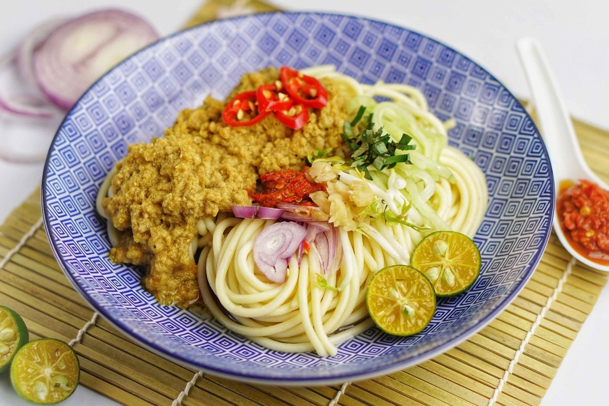

Laksa Johor is a traditional dish from the state of Johor, well-known for its thick and richly flavored gravy. Unlike other types of laksa, Laksa Johor uses spaghetti instead of rice noodles, making it unique and easily recognizable. Its gravy is made from a blend of fish, usually wolf herring (ikan parang) or mackerel ground finely and cooked together with coconut milk, sautéed spices, herbs, and belacan, creating a fragrant aroma with creamy, spicy, and slightly sweet notes. This dish is typically served with cucumber, bean sprouts, onions, basil leaves, calamansi lime, and sambal belacan, which further enhances its delicious taste. Laksa Johor not only showcases the culinary creativity of the Johor community but also stands as a symbol of the state’s traditional food identity.
Resipi Laksa Johor
Bahan-bahan:
Bahan Utama:
1 kg ikan parang atau sardin (boleh campur), rebus dan asingkan isi. Simpan air rebusan.
santan, dari 1 biji kelapa.
2 sudu besar rempah kari daging.
minyak masak.
1 batang serai, dititik.
3 sudu besar kerisik.
1 ikat daun kesum.
1 kuntum bunga kantan, belah 4.
5 helai daun pudina, hiris nipis (jika suka).
2-3 kepingan asam keping.
gula melaka.
garam.
Bahan Stock Udang:
kulit dan kepala udang, dari semangkuk udang (asingkan isi untuk bahan kisar B).
2 ulas bawang putih, hiris nipis.
Bahan Kisar Halus (A):
1.5 inci kunyit hidup.
2 inci lengkuas.
2 inci halia.
15- 20 tangkai cili kering, buang biji dan rendam air panas.
8-10 biji bawang merah.
5 ulas bawang putih.
4 batang serai, hiris nipis.
1 sudu besar belacan bakar.
1 1/2 sudu besar udang kering, rendam sampai lembut.
Bahan Untuk Kisar Halus (B):
isi udang, anggaran semangkuk kecil.
100g isi ikan kurau masin, rendam sampai lembut.
isi ikan rebus (dari bahan atas).
Bahan Untuk Spaghetti:
1 paket spaghettiSpageti jenama premium.
1 sudu besar garam.
air secukupnya.
sedikit minyak.
Bahan Untuk Hiasan/Ulaman:
timun, buang kulit dan biji,hiris nipis.
taugeh, buang ekor.
daun kesum, hiris nipis.
kacang panjang, hiris dadu.
bawang besar, hiris nipis.
limau kasturi.
lobak masin,celur dan rincik halus.
bunga kantan, hiris nipis.
daun selasih, hiris nipis.
Cara Penyediaan:
- Panaskan minyak masak dan tumis Bahan Kisar Halus A sampai naik bau.
- Masukkan serai yang dititik dan serbuk kari.
Teruskan kacau di atas api perlahan sehingga pecah minyak dan garing. - Masukkan pula Bahan Kisar Halus B, bersama air stok udang dan air rebusan ikan.
Masak sehingga kuah mendidih. - Masukkan santan, kerisik, daun kesum, bunga kantan, daun pudina,
asam keping, gula melaka dan garam secukup rasa. - Renehkan kuah di atas api perlahan sehingga mencapai tahap kepekatan yang sesuai.
- Hidangkan bersama spaghetti, bahan-bahan ulaman sambal belacan.